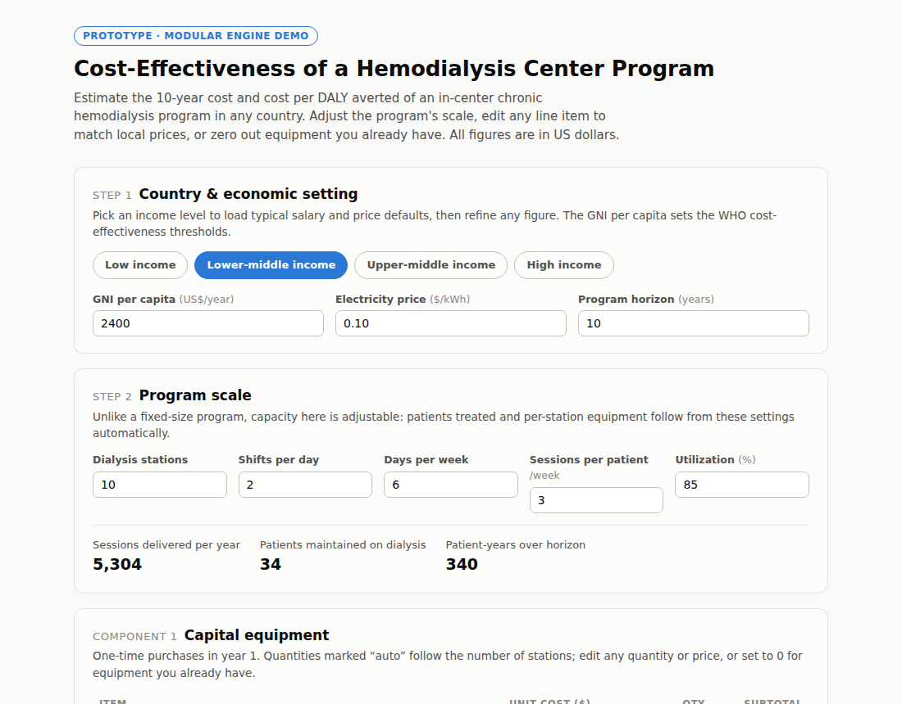
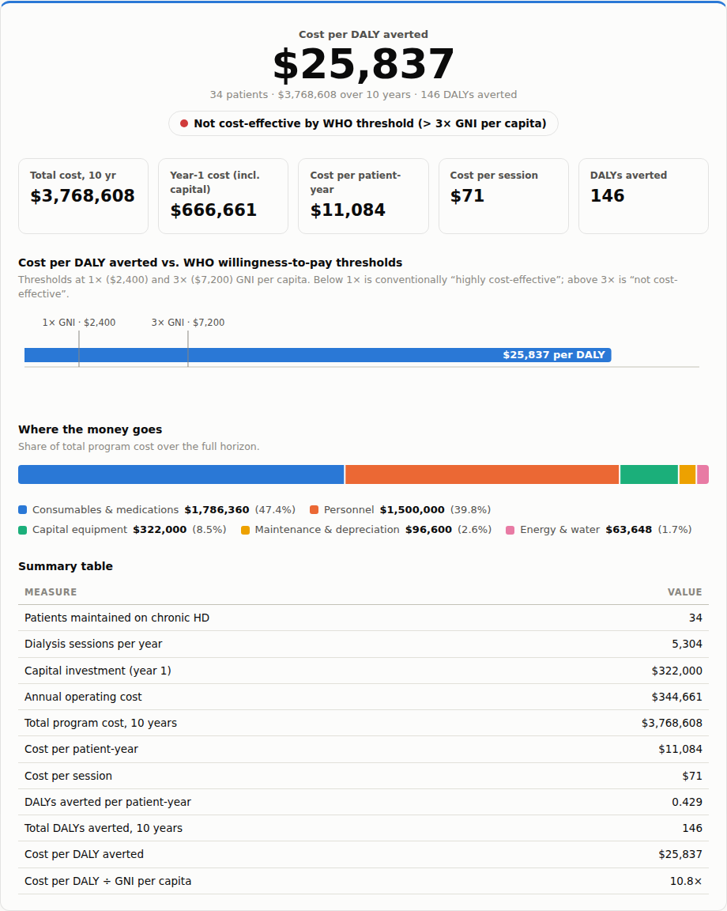

Ministries of health and hospital planners face the same hard question everywhere: with a limited budget, which program saves the most healthy life-years? Wintana's modular cost-effectiveness calculator turns that question into a transparent, adjustable model that answers in minutes, not months.
Every program — a surgical service, a dialysis center, a vaccination campaign — is described by the same five cost components. The engine does the rest.
Capital equipment, consumables, medications, personnel, and energy — every line item visible and editable, so officials can substitute local prices or zero out equipment they already own.
Set the size of the program — stations, shifts, cases per year — and patient volumes, costs, and DALYs averted recalculate automatically using Global Burden of Disease disability weights.
Results are benchmarked against the WHO willingness-to-pay thresholds of 1× and 3× GNI per capita, with clear visuals showing where every dollar goes.
Because the calculator is modular, adapting it to a new service line means swapping the component configuration — not rebuilding the tool. The mathematics, rendering, and threshold logic stay identical and validated.
Below: the hemodialysis module, one configuration of the engine. Users pick a country income level, size the program, and edit any line item — the verdict updates instantly. Shown here as a preview; the interactive calculator is available on request.


Access to the interactive calculator — and custom modules for other service lines — is available on request.